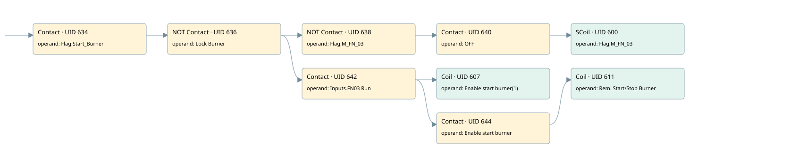

burner start sequence
burner control · 검색 색인 순서 13 · 원본 내부 NID 추정 12
백업 PLF 원본의 2691950 바이트 위치에서 복원한 XML. 검색 문서 1866의 객체 키 16102200e310000000000000와 연결했다. 이름 해석 9/9개. 남은 RefId는 상수 또는 미해석 참조다.
연결 구조 다시 그리기
원본 Part/PCon/Wire를 이용한 연결도다. TIA 화면의 래더 배치 또는 실행 결과를 재현한 그림은 아니다. 핀 연결은 아래 표와 원본 XML을 기준으로 읽는다. 노드 위에 마우스를 두면 피연산자 이름을 볼 수 있다.

접점·코일·블록과 피연산자
| Part UID | Gate | Negated 핀 | 연결 피연산자 |
|---|---|---|---|
| 634 | Contact | operand = Flag.Start_Burner | |
| 636 | Contact | operand | operand = Lock Burner |
| 638 | Contact | operand | operand = Flag.M_FN_03 |
| 640 | Contact | operand = OFF | |
| 600 | SCoil | operand = Flag.M_FN_03 | |
| 642 | Contact | operand = Inputs.FN03 Run | |
| 607 | Coil | operand = Enable start burner(1) | |
| 644 | Contact | operand = Enable start burner | |
| 611 | Coil | operand = Rem. Start/Stop Burner |
접점 경로를 펼친 조건식
Contact·O/A·비교기의 원본 연결을 읽기 쉽게 펼친 보조 해석이다. POWER는 전원 레일 시작을 뜻한다. 호출 블록·에지·타이머의 내부 동작과 다중 쓰기 순서는 이 표로 실행 검증하지 않았다. 미해석 핀과 RefId는 원문 연결표에서 확인한다.
| UID | 동작 | 대상 | 원본 접점 경로 | 내용 |
|---|---|---|---|---|
| 600 | SCoil | Flag.M_FN_03 | (((Flag.Start_Burner AND NOT [Lock Burner]) AND NOT [Flag.M_FN_03]) AND OFF) | 조건 성립 시 Set |
| 607 | Coil | Enable start burner(1) | ((Flag.Start_Burner AND NOT [Lock Burner]) AND Inputs.FN03 Run) | 조건에 따른 Coil 기록 |
| 611 | Coil | Rem. Start/Stop Burner | (((Flag.Start_Burner AND NOT [Lock Burner]) AND Inputs.FN03 Run) AND Enable start burner) | 조건에 따른 Coil 기록 |
원본 배선 연결
| Wire UID | 동일 Wire 연결 끝점 |
|---|---|
| 646 | Powerrail {} ↔ Part 634.in |
| 621 | ORef 612 (Flag.Start_Burner) ↔ Part 634.operand |
| 635 | Part 634.out ↔ Part 636.in |
| 622 | ORef 613 (Lock Burner) ↔ Part 636.operand |
| 637 | Part 636.out ↔ Part 638.in ↔ Part 642.in |
| 623 | ORef 614 (Flag.M_FN_03) ↔ Part 638.operand |
| 639 | Part 638.out ↔ Part 640.in |
| 624 | ORef 615 (OFF) ↔ Part 640.operand |
| 641 | Part 640.out ↔ Part 600.in |
| 626 | ORef 616 (Flag.M_FN_03) ↔ Part 600.operand |
| 627 | ORef 617 (Inputs.FN03 Run) ↔ Part 642.operand |
| 643 | Part 642.out ↔ Part 607.in ↔ Part 644.in |
| 628 | ORef 618 (Enable start burner(1)) ↔ Part 607.operand |
| 629 | ORef 619 (Enable start burner) ↔ Part 644.operand |
| 645 | Part 644.out ↔ Part 611.in |
| 631 | ORef 620 (Rem. Start/Stop Burner) ↔ Part 611.operand |
식별자 해석 근거 9개
| ORef UID | RefId | 이름 | IdentXmlPart 파일 | 해석 방법 |
|---|---|---|---|---|
| 612 | 19 | Flag.Start_Burner | 0585-IdentXmlPart.xml | UID/RID + search-text + NID agreement |
| 613 | 89 | Lock Burner | 0582-IdentXmlPart.xml | UID/RID + search-text + NID agreement |
| 614 | 90 | Flag.M_FN_03 | 0585-IdentXmlPart.xml | UID/RID + search-text + NID agreement |
| 615 | 80 | OFF | 0582-IdentXmlPart.xml | UID/RID + search-text + NID agreement |
| 616 | 90 | Flag.M_FN_03 | 0585-IdentXmlPart.xml | UID/RID + search-text + NID agreement |
| 617 | 225 | Inputs.FN03 Run | 0585-IdentXmlPart.xml | UID/RID + search-text + NID agreement |
| 618 | 92 | Enable start burner(1) | 0582-IdentXmlPart.xml | UID/RID + search-text + NID agreement |
| 619 | 93 | Enable start burner | 0582-IdentXmlPart.xml | UID/RID + search-text + NID agreement |
| 620 | 94 | Rem. Start/Stop Burner | 0582-IdentXmlPart.xml | UID/RID + search-text + NID agreement |
검색 코드 보조 자료
참조 명칭을 찾기 위한 자료이며 실행 순서나 AND/OR 관계는 위 연결표로 확인한다.
"flag".start_burner "lock burner" "flag".m_fn_03 "off" "flag".m_fn_03 "inputs"."fn03 run" "enable start burner(1)" "enable start burner" "rem. start/stop burner"